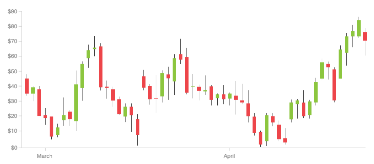
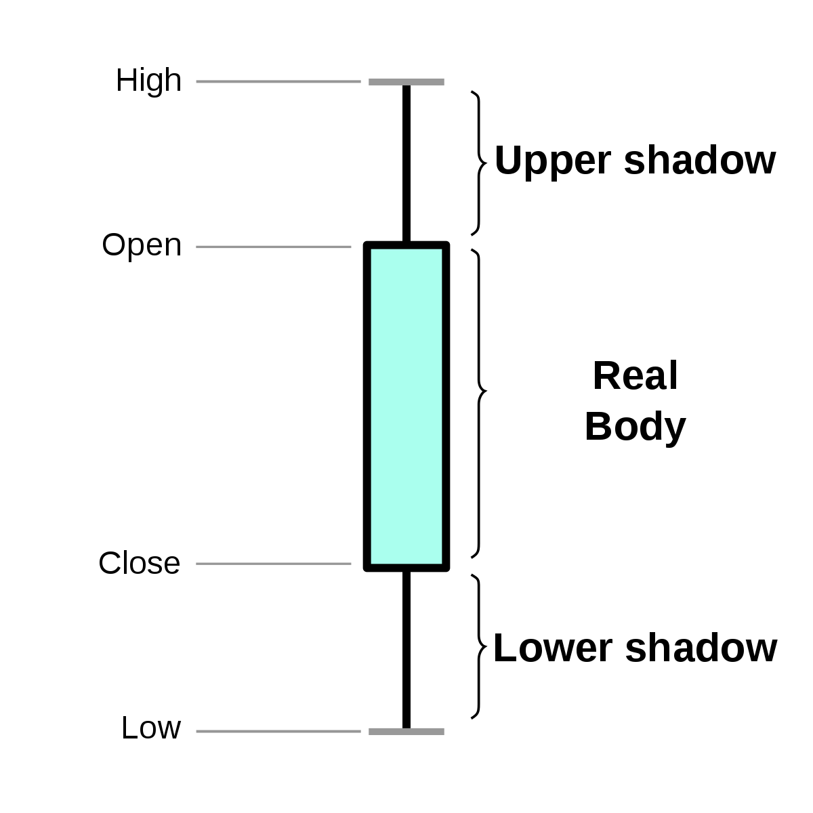
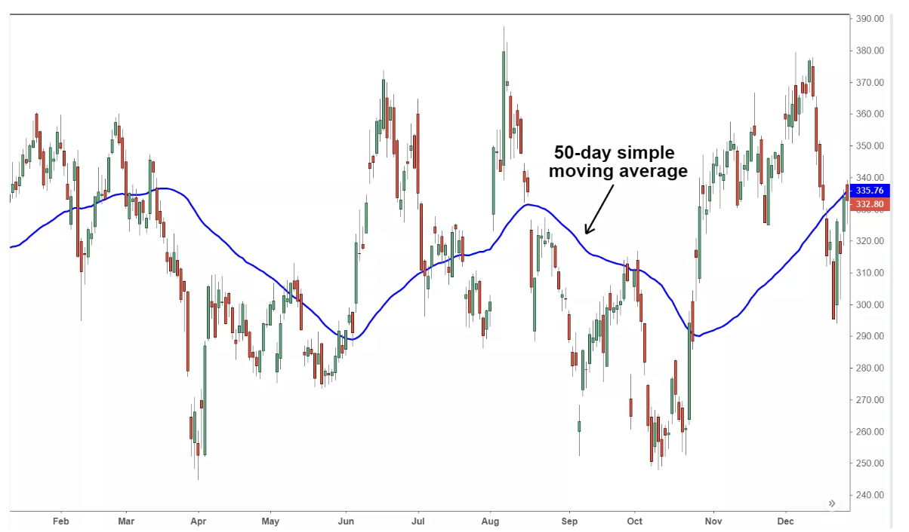
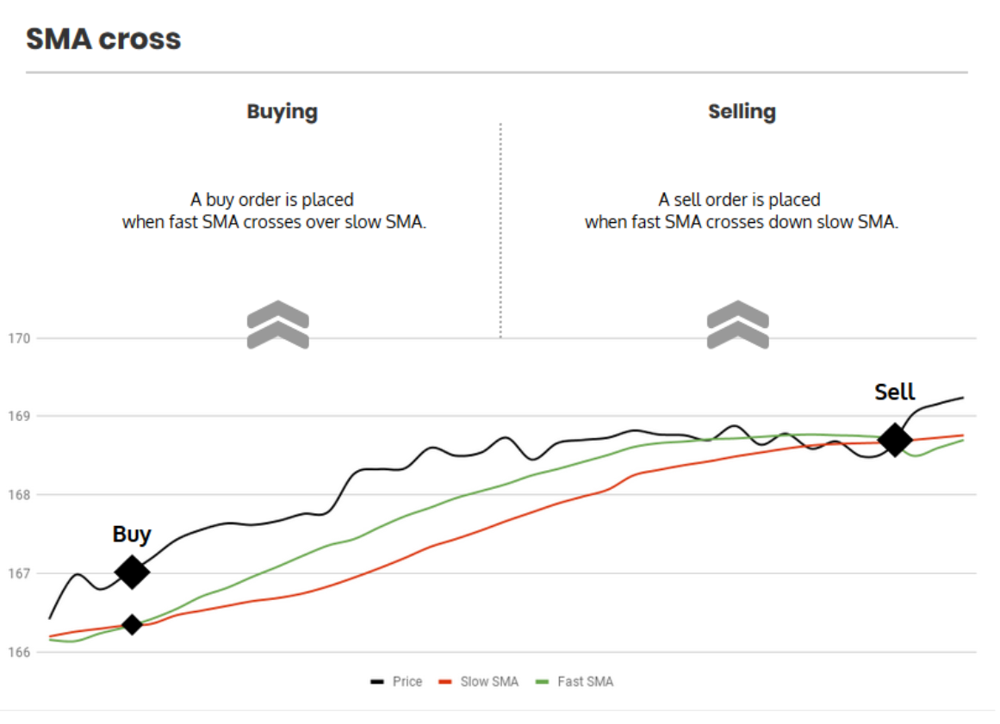

- 00 开篇词 从工程的角度深入理解Python.md.html
- 01 如何逐步突破，成为Python高手？.md.html
- 02 Jupyter Notebook为什么是现代Python的必学技术？.md.html
- 03 列表和元组，到底用哪一个？.md.html
- 04 字典、集合，你真的了解吗？.md.html
- 05 深入浅出字符串.md.html
- 06 Python “黑箱”：输入与输出.md.html
- 07 修炼基本功：条件与循环.md.html
- 08 异常处理：如何提高程序的稳定性？.md.html
- 09 不可或缺的自定义函数.md.html
- 10 简约不简单的匿名函数.md.html
- 11 面向对象（上）：从生活中的类比说起.md.html
- 12 面向对象（下）：如何实现一个搜索引擎？.md.html
- 13 搭建积木：Python 模块化.md.html
- 14 答疑（一）：列表和元组的内部实现是怎样的？.md.html
- 15 Python对象的比较、拷贝.md.html
- 16 值传递，引用传递or其他，Python里参数是如何传递的？.md.html
- 17 强大的装饰器.md.html
- 18 metaclass，是潘多拉魔盒还是阿拉丁神灯？.md.html
- 19 深入理解迭代器和生成器.md.html
- 20 揭秘 Python 协程.md.html
- 21 Python并发编程之Futures.md.html
- 22 并发编程之Asyncio.md.html
- 23 你真的懂Python GIL（全局解释器锁）吗？.md.html
- 24 带你解析 Python 垃圾回收机制.md.html
- 25 答疑（二）：GIL与多线程是什么关系呢？.md.html
- 26 活都来不及干了，还有空注意代码风格？！.md.html
- 27 学会合理分解代码，提高代码可读性.md.html
- 28 如何合理利用assert？.md.html
- 29 巧用上下文管理器和With语句精简代码.md.html
- 30 真的有必要写单元测试吗？.md.html
- 31 pdb & cProfile：调试和性能分析的法宝.md.html
- 32 答疑（三）：如何选择合适的异常处理方式？.md.html
- 33 带你初探量化世界.md.html
- 34 RESTful & Socket：搭建交易执行层核心.md.html
- 35 RESTful & Socket：行情数据对接和抓取.md.html
- 36 Pandas & Numpy：策略与回测系统.md.html
- 37 Kafka & ZMQ：自动化交易流水线.md.html
- 38 MySQL：日志和数据存储系统.md.html
- 39 Django：搭建监控平台.md.html
- 40 总结：Python中的数据结构与算法全景.md.html
- 41 硅谷一线互联网公司的工作体验.md.html
- 42 细数技术研发的注意事项.md.html
- 43 Q&A：聊一聊职业发展和选择.md.html
- 加餐 带你上手SWIG：一份清晰好用的SWIG编程实践指南.md.html
- 结束语 技术之外的几点成长建议.md.html
- 捐赠
36 Pandas & Numpy：策略与回测系统
大家好，我是景霄。
上节课，我们介绍了交易所的数据抓取，特别是orderbook和tick数据的抓取。今天这节课，我们考虑的是，怎么在这些历史数据上测试一个交易策略。
首先我们要明确，对于很多策略来说，我们上节课抓取的密集的orderbook和tick数据，并不能简单地直接使用。因为数据量太密集，包含了太多细节；而且长时间连接时，网络随机出现的不稳定，会导致丢失部分tick数据。因此，我们还需要进行合适的清洗、聚合等操作。
此外，为了进行回测，我们需要一个交易策略，还需要一个测试框架。目前已存在很多成熟的回测框架，但是为了Python学习，我决定带你搭建一个简单的回测框架，并且从中简单一窥Pandas的优势。
OHLCV数据
了解过一些股票交易的同学，可能知道K线这种东西。K线又称“蜡烛线”，是一种反映价格走势的图线。它的特色在于，一个线段内记录了多项讯息，相当易读易懂且实用有效，因此被广泛用于股票、期货、贵金属、数字货币等行情的技术分析。下面便是一个K线示意图。

K线示意图
其中，每一个小蜡烛，都代表着当天的开盘价（Open）、最高价（High）、最低价（Low）和收盘价（Close），也就是我画的第二张图表示的这样。

K线的“小蜡烛” – OHLC
类似的，除了日K线之外，还有周K线、小时K线、分钟K线等等。那么这个K线是怎么计算来的呢？
我们以小时K线图为例，还记得我们当时抓取的tick数据吗？也就是每一笔交易的价格和数量。那么，如果从上午10:00开始，我们开始积累tick的交易数据，以10:00开始的第一个交易作为Open数据，11:00前的最后一笔交易作为Close值，并把这一个小时最低和最高的成交价格分别作为High和Low的值，我们就可以绘制出这一个小时对应的“小蜡烛”形状了。
如果再加上这一个小时总的成交量（Volumn），就得到了OHLCV数据。
所以，如果我们一直抓取着tick底层原始数据，我们就能在上层聚合出1分钟K线、小时K线以及日、周k线等等。如果你对这一部分操作有兴趣，可以把此作为今天的课后作业来实践。
接下来，我们将使用Gemini从2015年到2019年7月这个时间内，BTC对USD每个小时的OHLCV数据，作为策略和回测的输入。你可以在这里下载数据。
数据下载完成后，我们可以利用Pandas读取，比如下面这段代码。
def assert_msg(condition, msg):
if not condition:
raise Exception(msg)
def read_file(filename):
# 获得文件绝对路径
filepath = path.join(path.dirname(__file__), filename)
# 判定文件是否存在
assert_msg(path.exists(filepath), "文件不存在")
# 读取CSV文件并返回
return pd.read_csv(filepath,
index_col=0,
parse_dates=True,
infer_datetime_format=True)
BTCUSD = read_file('BTCUSD_GEMINI.csv')
assert_msg(BTCUSD.__len__() > 0, '读取失败')
print(BTCUSD.head())
########## 输出 ##########
Time Symbol Open High Low Close Volume
Date
2019-07-08 00:00:00 BTCUSD 11475.07 11540.33 11469.53 11506.43 10.770731
2019-07-07 23:00:00 BTCUSD 11423.00 11482.72 11423.00 11475.07 32.996559
2019-07-07 22:00:00 BTCUSD 11526.25 11572.74 11333.59 11423.00 48.937730
2019-07-07 21:00:00 BTCUSD 11515.80 11562.65 11478.20 11526.25 25.323908
2019-07-07 20:00:00 BTCUSD 11547.98 11624.88 11423.94 11515.80 63.211972
这段代码提供了两个工具函数。
- 一个是read_file，它的作用是，用pandas读取csv文件。
- 另一个是assert_msg，它的作用类似于assert，如果传入的条件（contidtion）为否，就会抛出异常。不过，你需要提供一个参数，用于指定要抛出的异常信息。
回测框架
说完了数据，我们接着来看回测数据。常见的回测框架有两类。一类是向量化回测框架，它通常基于Pandas+Numpy来自己搭建计算核心；后端则是用MySQL或者MongoDB作为源。这种框架通过Pandas+Numpy对OHLC数组进行向量运算，可以在较长的历史数据上进行回测。不过，因为这类框架一般只用OHLC，所以模拟会比较粗糙。
另一类则是事件驱动型回测框架。这类框架，本质上是针对每一个tick的变动或者orderbook的变动生成事件；然后，再把一个个事件交给策略进行执行。因此，虽然它的拓展性很强，可以允许更加灵活的策略，但回测速度是很慢的。
我们想要学习量化交易，使用大型成熟的回测框架，自然是第一选择。
- 比如Zipline，就是一个热门的事件驱动型回测框架，背后有大型社区和文档的支持。
- PyAlgoTrade也是事件驱动的回测框架，文档相对完整，整合了知名的技术分析（Techique Analysis）库TA-Lib。在速度和灵活方面，它比Zipline 强。不过，它的一大硬伤是不支持 Pandas 的模块和对象。
显然，对于我们Python学习者来说，第一类也就是向量型回测框架，才是最适合我们练手的项目了。那么，我们就开始吧。
首先，我先为你梳理下回测流程，也就是下面五步：
- 读取OHLC数据；
- 对OHLC进行指标运算；
- 策略根据指标向量决定买卖；
- 发给模拟的”交易所“进行交易；
- 最后，统计结果。
对此，使用之前学到的面向对象思维方式，我们可以大致抽取三个类：
- 交易所类（ ExchangeAPI）：负责维护账户的资金和仓位，以及进行模拟的买卖；
- 策略类（Strategy）：负责根据市场信息生成指标，根据指标决定买卖；
- 回测类框架（Backtest）：包含一个策略类和一个交易所类，负责迭代地对每个数据点调用策略执行。
接下来，我们先从最外层的大框架开始。这样的好处在于，我们是从上到下、从外往内地思考，虽然还没有开始设计依赖项（Backtest的依赖项是ExchangeAPI和Strategy），但我们可以推测出它们应有的接口形式。推测接口的本质，其实就是推测程序的输入。
这也是我在一开始提到过的，对于程序这个“黑箱”，你在一开始设计的时候，就要想好输入和输出。
回到最外层Backtest类。我们需要知道，输出是最后的收益，那么显然，输入应该是初始输入的资金数量（cash）。
此外，为了模拟得更加真实，我们还要考虑交易所的手续费（commission）。手续费的多少取决于券商（broker）或者交易所，比如我们买卖股票的券商手续费可能是万七，那么就是0.0007。但是在比特币交易领域，手续费通常会稍微高一点，可能是千分之二左右。当然，无论怎么多，一般也不会超过5 %。否则我们大家交易几次就破产了，也就不会有人去交易了。
这里说一句题外话，不知道你有没有发现，无论数字货币的价格是涨还是跌，总有一方永远不亏，那就是交易所。因为只要有人交易，他们就有白花花的银子进账。
回到正题，至此，我们就确定了Backtest的输入和输出。
它的输入是：
- OHLC数据；
- 初始资金；
- 手续费率；
- 交易所类；
- 策略类。
输出则是：
- 最后剩余市值。
对此，你可以参考下面这段代码：
class Backtest:
"""
Backtest回测类，用于读取历史行情数据、执行策略、模拟交易并估计
收益。
初始化的时候调用Backtest.run来时回测
instance, or `backtesting.backtesting.Backtest.optimize` to
optimize it.
"""
def __init__(self,
data: pd.DataFrame,
strategy_type: type(Strategy),
broker_type: type(ExchangeAPI),
cash: float = 10000,
commission: float = .0):
"""
构造回测对象。需要的参数包括：历史数据，策略对象，初始资金数量，手续费率等。
初始化过程包括检测输入类型，填充数据空值等。
参数：
:param data: pd.DataFrame pandas Dataframe格式的历史OHLCV数据
:param broker_type: type(ExchangeAPI) 交易所API类型，负责执行买卖操作以及账户状态的维护
:param strategy_type: type(Strategy) 策略类型
:param cash: float 初始资金数量
:param commission: float 每次交易手续费率。如2%的手续费此处为0.02
"""
assert_msg(issubclass(strategy_type, Strategy), 'strategy_type不是一个Strategy类型')
assert_msg(issubclass(broker_type, ExchangeAPI), 'strategy_type不是一个Strategy类型')
assert_msg(isinstance(commission, Number), 'commission不是浮点数值类型')
data = data.copy(False)
# 如果没有Volumn列，填充NaN
if 'Volume' not in data:
data['Volume'] = np.nan
# 验证OHLC数据格式
assert_msg(len(data.columns & {'Open', 'High', 'Low', 'Close', 'Volume'}) == 5,
("输入的`data`格式不正确，至少需要包含这些列："
"'Open', 'High', 'Low', 'Close'"))
# 检查缺失值
assert_msg(not data[['Open', 'High', 'Low', 'Close']].max().isnull().any(),
('部分OHLC包含缺失值，请去掉那些行或者通过差值填充. '))
# 如果行情数据没有按照时间排序，重新排序一下
if not data.index.is_monotonic_increasing:
data = data.sort_index()
# 利用数据，初始化交易所对象和策略对象。
self._data = data # type: pd.DataFrame
self._broker = broker_type(data, cash, commission)
self._strategy = strategy_type(self._broker, self._data)
self._results = None
def run(self):
"""
运行回测，迭代历史数据，执行模拟交易并返回回测结果。
Run the backtest. Returns `pd.Series` with results and statistics.
Keyword arguments are interpreted as strategy parameters.
"""
strategy = self._strategy
broker = self._broker
# 策略初始化
strategy.init()
# 设定回测开始和结束位置
start = 100
end = len(self._data)
# 回测主循环，更新市场状态，然后执行策略
for i in range(start, end):
# 注意要先把市场状态移动到第i时刻，然后再执行策略。
broker.next(i)
strategy.next(i)
# 完成策略执行之后，计算结果并返回
self._results = self._compute_result(broker)
return self._results
def _compute_result(self, broker):
s = pd.Series()
s['初始市值'] = broker.initial_cash
s['结束市值'] = broker.market_value
s['收益'] = broker.market_value - broker.initial_cash
return s
这段代码有点长，但是核心其实就两部分。
- 初始化函数（init）：传入必要参数，对OHLC数据进行简单清洗、排序和验证。我们从不同地方下载的数据，可能格式不一样；而排序的方式也可能是从前往后。所以，这里我们把数据统一设置为按照时间从之前往现在的排序。
- 执行函数（run）：这是回测框架的主要循环部分，核心是更新市场还有更新策略的时间。迭代完成所有的历史数据后，它会计算收益并返回。
你应该注意到了，此时，我们还没有定义策略和交易所API的结构。不过，通过回测的执行函数，我们可以确定这两个类的接口形式。
策略类（Strategy）的接口形式为：
- 初始化函数init()，根据历史数据进行指标（Indicator）计算。
- 步进函数next()，根据当前时间和指标，决定买卖操作，并发给交易所类执行。
交易所类（ExchangeAPI）的接口形式为：
- 步进函数next()，根据当前时间，更新最新的价格；
- 买入操作buy()，买入资产；
- 卖出操作sell()，卖出资产。
交易策略
接下来我们来看交易策略。交易策略的开发是一个非常复杂的学问。为了达到学习的目的，我们来想一个简单的策略——移动均值交叉策略。
为了了解这个策略，我们先了解一下，什么叫做简单移动均值（Simple Moving Average，简称为SMA，以下皆用SMA表示简单移动均值）。我们知道，N个数的序列 x[0]、x[1] .…… x[N] 的均值，就是这N个数的和除以N。
现在，我假设一个比较小的数K，比N小很多。我们用一个K大小的滑动窗口，在原始的数组上滑动。通过对每次框住的K个元素求均值，我们就可以得到，原始数组的窗口大小为K的SMA了。
SMA，实质上就是对原始数组进行了一个简单平滑处理。比如，某支股票的价格波动很大，那么，我们用SMA平滑之后，就会得到下面这张图的效果。

某个投资品价格的SMA，窗口大小为50
你可以看出，如果窗口大小越大，那么SMA应该越平滑，变化越慢；反之，如果SMA比较小，那么短期的变化也会越快地反映在SMA上。
于是，我们想到，能不能对投资品的价格设置两个指标呢？这俩指标，一个是小窗口的SMA，一个是大窗口的SMA。
- 如果小窗口的SMA曲线从下面刺破或者穿过大窗口SMA，那么说明，这个投资品的价格在短期内快速上涨，同时这个趋势很强烈，可能是一个买入的信号；
- 反之，如果大窗口的SMA从下方突破小窗口SMA，那么说明，投资品的价格在短期内快速下跌，我们应该考虑卖出。
下面这幅图，就展示了这两种情况。

明白了这里的概念和原理后，接下来的操作就不难了。利用Pandas，我们可以非常简单地计算SMA和SMA交叉。比如，你可以引入下面两个工具函数：
def SMA(values, n):
"""
返回简单滑动平均
"""
return pd.Series(values).rolling(n).mean()
def crossover(series1, series2) -> bool:
"""
检查两个序列是否在结尾交叉
:param series1: 序列1
:param series2: 序列2
:return: 如果交叉返回True，反之False
"""
return series1[-2] < series2[-2] and series1[-1] > series2[-1]
如代码所示，对于输入的一个数组，Pandas的rolling(k)函数，可以方便地计算窗内口大小为K的SMA数组；而想要检查某个时刻两个SMA是否交叉，你只需要查看两个数组末尾的两个元素即可。
那么，基于此，我们就可以开发出一个简单的策略了。下面这段代码表示策略的核心思想，我做了详细的注释，你理解起来应该没有问题：
def next(self, tick):
# 如果此时快线刚好越过慢线，买入全部
if crossover(self.sma1[:tick], self.sma2[:tick]):
self.buy()
# 如果是慢线刚好越过快线，卖出全部
elif crossover(self.sma2[:tick], self.sma1[:tick]):
self.sell()
# 否则，这个时刻不执行任何操作。
else:
pass
说完策略的核心思想，我们开始搭建策略类的框子。
首先，我们要考虑到，策略类Strategy应该是一个可以被继承的类，同时应该包含一些固定的接口。这样，回测器才能方便地调用。
于是，我们可以定义一个Strategy抽象类，包含两个接口方法init和next，分别对应我们前面说的指标计算和步进函数。不过注意，抽象类是不能被实例化的。所以，我们必须定义一个具体的子类，同时实现了init和next方法才可以。
这个类的定义，你可以参考下面代码的实现：
import abc
import numpy as np
from typing import Callable
class Strategy(metaclass=abc.ABCMeta):
"""
抽象策略类，用于定义交易策略。
如果要定义自己的策略类，需要继承这个基类，并实现两个抽象方法：
Strategy.init
Strategy.next
"""
def __init__(self, broker, data):
"""
构造策略对象。
@params broker: ExchangeAPI 交易API接口，用于模拟交易
@params data: list 行情数据数据
"""
self._indicators = []
self._broker = broker # type: _Broker
self._data = data # type: _Data
self._tick = 0
def I(self, func: Callable, *args) -> np.ndarray:
"""
计算买卖指标向量。买卖指标向量是一个数组，长度和历史数据对应；
用于判定这个时间点上需要进行"买"还是"卖"。
例如计算滑动平均：
def init():
self.sma = self.I(utils.SMA, self.data.Close, N)
"""
value = func(*args)
value = np.asarray(value)
assert_msg(value.shape[-1] == len(self._data.Close), '指示器长度必须和data长度相同')
self._indicators.append(value)
return value
@property
def tick(self):
return self._tick
@abc.abstractmethod
def init(self):
"""
初始化策略。在策略回测/执行过程中调用一次，用于初始化策略内部状态。
这里也可以预计算策略的辅助参数。比如根据历史行情数据：
计算买卖的指示器向量；
训练模型/初始化模型参数
"""
pass
@abc.abstractmethod
def next(self, tick):
"""
步进函数，执行第tick步的策略。tick代表当前的"时间"。比如data[tick]用于访问当前的市场价格。
"""
pass
def buy(self):
self._broker.buy()
def sell(self):
self._broker.sell()
@property
def data(self):
return self._data
为了方便访问成员，我们还定义了一些Python property。同时，我们的买卖请求是由策略类发出、由交易所API来执行的，所以我们的策略类里依赖于ExchangeAPI类。
现在，有了这个框架，我们实现移动均线交叉策略就很简单了。你只需要在init函数中，定义计算大小窗口SMA的逻辑；同时，在next函数中完成交叉检测和买卖调用就行了。具体实现，你可以参考下面这段代码：
from utils import assert_msg, crossover, SMA
class SmaCross(Strategy):
# 小窗口SMA的窗口大小，用于计算SMA快线
fast = 10
# 大窗口SMA的窗口大小，用于计算SMA慢线
slow = 20
def init(self):
# 计算历史上每个时刻的快线和慢线
self.sma1 = self.I(SMA, self.data.Close, self.fast)
self.sma2 = self.I(SMA, self.data.Close, self.slow)
def next(self, tick):
# 如果此时快线刚好越过慢线，买入全部
if crossover(self.sma1[:tick], self.sma2[:tick]):
self.buy()
# 如果是慢线刚好越过快线，卖出全部
elif crossover(self.sma2[:tick], self.sma1[:tick]):
self.sell()
# 否则，这个时刻不执行任何操作。
else:
pass
模拟交易
到这里，我们的回测就只差最后一块儿了。胜利就在眼前，我们继续加油。
我们前面提到过，交易所类负责模拟交易，而模拟的基础，就是需要当前市场的价格。这里，我们可以用OHLC中的Close，作为那个时刻的价格。
此外，为了简化设计，我们假设买卖操作都利用的是当前账户的所有资金、仓位，且市场容量足够大。这样，我们的下单请求就能够马上完全执行。
也别忘了手续费这个大头。考虑到有手续费的情况，此时，我们最核心的买卖函数应该怎么来写呢？
我们一起来想这个问题。假设，我们现在有1000.0元，此时BTC的价格是100.00元（当然没有这么好的事情啊，这里只是假设），并且交易手续费为1%。那么，我们能买到多少BTC呢？
我们可以采用这种算法：
买到的数量 = 投入的资金 * (1.0 - 手续费) / 价格
那么此时，你就能收到9.9个BTC。
类似的，卖出的时候结算方式如下，也不难理解：
卖出的收益 = 持有的数量 * 价格 * (1.0 - 手续费)
所以，最终模拟交易所类的实现，你可以参考下面这段代码：
from utils import read_file, assert_msg, crossover, SMA
class ExchangeAPI:
def __init__(self, data, cash, commission):
assert_msg(0 < cash, "初始现金数量大于0，输入的现金数量：{}".format(cash))
assert_msg(0 <= commission <= 0.05, "合理的手续费率一般不会超过5%，输入的费率：{}".format(commission))
self._inital_cash = cash
self._data = data
self._commission = commission
self._position = 0
self._cash = cash
self._i = 0
@property
def cash(self):
"""
:return: 返回当前账户现金数量
"""
return self._cash
@property
def position(self):
"""
:return: 返回当前账户仓位
"""
return self._position
@property
def initial_cash(self):
"""
:return: 返回初始现金数量
"""
return self._inital_cash
@property
def market_value(self):
"""
:return: 返回当前市值
"""
return self._cash + self._position * self.current_price
@property
def current_price(self):
"""
:return: 返回当前市场价格
"""
return self._data.Close[self._i]
def buy(self):
"""
用当前账户剩余资金，按照市场价格全部买入
"""
self._position = float(self._cash / (self.current_price * (1 + self._commission)))
self._cash = 0.0
def sell(self):
"""
卖出当前账户剩余持仓
"""
self._cash += float(self._position * self.current_price * (1 - self._commission))
self._position = 0.0
def next(self, tick):
self._i = tick
其中的current_price（当前价格），可以方便地获得模拟交易所当前时刻的商品价格；而market_value，则可以获得当前总市值。在初始化函数的时候，我们检查手续费率和输入的现金数量，是不是在一个合理的范围。
有了所有的这些部分，我们就可以来模拟回测啦！
首先，我们设置初始资金量为10000.00美元，交易所手续费率为0。这里你可以猜一下，如果我们从2015年到现在，都按照SMA来买卖，现在应该有多少钱呢？
def main():
BTCUSD = read_file('BTCUSD_GEMINI.csv')
ret = Backtest(BTCUSD, SmaCross, ExchangeAPI, 10000.0, 0.00).run()
print(ret)
if __name__ == '__main__':
main()
铛铛铛，答案揭晓，程序将输出：
初始市值 10000.000000
结束市值 576361.772884
收益 566361.772884
哇，结束时，我们将有57万美元，翻了整整57倍啊！简直不要太爽。不过，等等，这个手续费率为0，实在是有点碍眼，因为根本不可能啊。我们现在来设一个比较真实的值吧，大概千分之三，然后再来试试：
初始市值 10000.000000
结束市值 2036.562001
收益 -7963.437999
什么鬼？我们变成赔钱了，只剩下2000美元了！这是真的吗？
这是真的，也是假的。
我说的“真”是指，如果你真的用SMA交叉这种简单的方法去交易，那么手续费摩擦和滑点等因素，确实可能让你的高频策略赔钱。
而我说是“假”是指，这种模拟交易的方式非常粗糙。真实的市场情况，并非这么理想——比如买卖请求永远马上执行；再比如，我们在市场中进行交易的同时不会影响市场价格等，这些理想情况都是不可能的。所以，很多时候，回测永远赚钱，但实盘马上赔钱。
总结
这节课，我们继承上一节，介绍了回测框架的分类、数据的格式，并且带你从头开始写了一个简单的回测系统。你可以把今天的代码片段“拼”起来，这样就会得到一个简化的回测系统样例。同时，我们实现了一个简单的交易策略，并且在真实的历史数据上运行了回测结果。我们观察到，在加入手续费后，策略的收益情况发生了显著的变化。
思考题
最后，给你留一个思考题。之前我们介绍了如何抓取tick数据，你可以根据抓取的tick数据，生成5分钟、每小时和每天的OHLCV数据吗？欢迎在留言区写下你的答案和问题，也欢迎你把这篇文章分享出去。
© 2019 - 2023 Liangliang Lee. Powered by gin and hexo-theme-book.